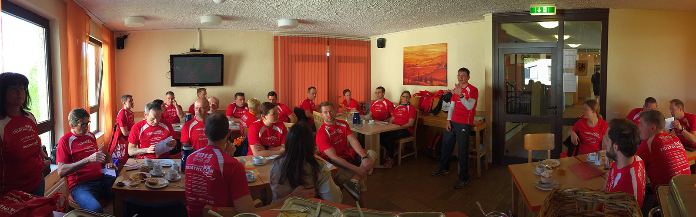

Bei den folgenden Veranstaltungen gehen Mitglieder des 1. FC Kaiserslautern Triathlon Teams an den Start. Außerdem bietet diese Seite eine Auswahl an Triathlon- und Laufveranstaltungen, falls noch jemand eine Idee braucht, wo er oder sie starten könnte. Selbstverständlich verlinken wir hier auch zu den Veranstaltern und zu unseren Ergebnissen, Bildern etc.